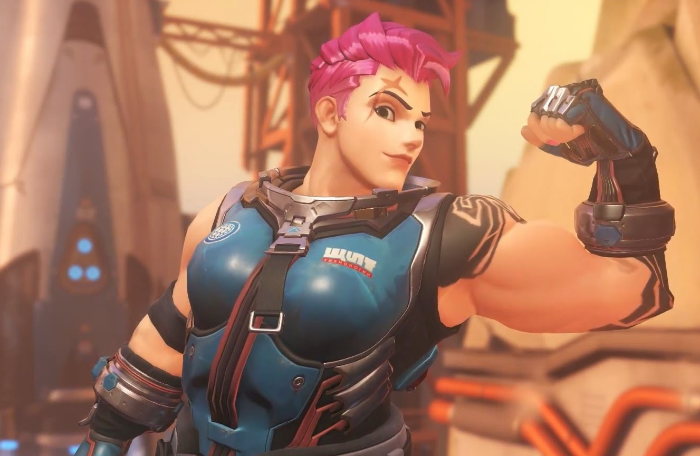

Female Gamers expressing their issues in the video game community
Written by Trista Gayas
Abstract
This issue focuses on female gamers expressing few issues in the video game community. The beginning of the paragraph starts with a story about this author's personal experience as a female gamer and the problems they went through. After that, this research focuses on understanding women in the video community who are expressing their thoughts about "weak" and "strong" female characters and their aggression from playing male characters.
keywords
- feminism
- girl power
- sexuality
- masculine
- aggression
- stereotype
Discplines
Introduction
First and foremost, this story is based on the author's real experience as a woman gamer. When she was first introduced to video games by my siblings, she was intrigued and awed about how the characters and/or objects moved around on the screen. Because of that, it made her become interested in playing video games as well as majoring in video game design. While she did play, there were experiences that she went through as a woman. One of the games that she used to play often back in high school was Counter-Strike Global Offensive. They think it was fun playing but the community was toxic. Some of the players would throw insults at her through voice chat; it got to the point where she muted them as a whole for the sake of her mentality. Of course it works but it becomes difficult to communicate with them. She left after because of the toxicity in the community and played easy games such as Stardew Valley. For this essay, it focuses on bringing up about women’s experiences as a video gamer such as the stereotypes of female characters in video games such as giving the female character to be shown as a “weak” role, breaking the stereotypes of female characters in video games by giving a stronger role rather than shown as a “weak” role and women expressing their aggression by playing male characters in video games.
"Weak" Female characters in the video games
There are common stereotypes of female characters in video games such as giving the female character to be shown as a “weak” role. According to the Gender and video games: How is female gender generally represented in various genres of video games?, the author wrote, “The representation of females in video games is usually sexualized (Jahn- Sudmann & Stockmann, 2008) and according to Laura Mulvey (1975), ‘presents them as objects of the male gaze: most women appear to be hardly older than 30, in most cases wear skin tight, figure-accenting clothing and are slim.’ In these kinds of games, women are dressed in provocative clothing and are created to serve males as an aid or even as a sexual object” (Kondrat, 3). Because the “weak” role stereotype exists from the video game, these ideas shift to the real life world. It basically makes the situation uncomfortable and dangerous for women in the video game community. Male gamers would basically harass women in the community to the point where they would slut-shaming them for wearing explicit clothing while they think it is okay to have their female characters dress up in almost nudity because they have full control of the character. In addition, some women in the video game community would have self-esteem issues that they would need to change up their appearance to get validation from the male video gamers. It would get to the point that they would develop mental disorders such as eating disorders and body dysmorphic disorder. As a result, these ideas would destroy women’s minds about trying to look like the video game character and be able to achieve their looks. In addition, it could be difficult to get out of that mindset they have. That is the reason why people would basically create female characters who can show their stronger appearance in the video game so that women can feel relatable with the characters.
"Strong" Female characters in the video games
There are people who broke stereotypes of female characters in video games by giving a stronger role rather than shown as a “weak” role. In the same article as the first paragraph, Gender and video games: How is female gender generally represented in various genres of video games?,the author brought up this specific character for this video game, “As it was mentioned, Lara Croft is the female protagonist of the game called ‘Tomb Raider’ created in 1996 by Core Design Company. She is independent, strong, smart, wealthy, and has an amazing body and countless skills. It is a perfect fantasy for both girls, who want to be like her, and boys, who want to be with someone like her”(Kondrat, 10). This paragraph is important because it shows that having a female protagonist in the video game creates a connection with not just females but also male who want to express their feminine side as well. Not only that but the female protagonist shows that it is acceptable for women gamers to show off their masculine side and be able to feel powerful and representative of their gender. Women gamers have the right to control their character based on their decision. Although the heroine is female characters in the video games, it can be quite difficult to gain attraction to the female gamers because they are used to seeing the “weak” female characters in the game throughout the years as what the author wrote—“Additionally, it is worth mentioning that, even if video games give both genders equal opportunity to be the protagonist, the selection by the players is not. It might be that marketing is one of the reasons why female protagonists are not well-known and desired in video games” (Kondrat, 11). Though, it is a baby step process but so far, it is eventually happening slowly and more gamers are starting to appreciate seeing female protagonists.
Aggression in the video games
Women expressed their aggression when it comes to playing male characters compared to playing female characters in video games. According to the discussion section in Effects of Playing a Violent Video Game as Male Versus Female Avatar on Subsequent Aggression in Male and Female Players, the study shows that “playing a video game as a violent male avatar increased aggression relative to playing as a violent female avatar for both men and women…both male and female participants who played a violent game as a male avatar behaved more aggressively afterwards than those who played the same game as a female avatar” (Yang et al, 3). There are some female gamers who would create or play a male character in order to express their aggression as a result of relieving their mental stress from their lives. In addition, female gamers would play male characters to show off their dominant side whether or not they share their gender publicly. Aside from expressing their aggression, this relates to the second paragraph about showing off their masculinity. To them, it shows that it is okay to show off who they really are and not try to pretend to be all soft towards other players. In other words, they want to show off their authentic side and not feel shame about it in the community.
Conclusion
It is important to understand their experience in the video games community. Women in the video games community expressed their feelings about the “weak” and “strong” female characters and how it affects them as a whole. Aside from that, female gamers would rather express themselves of who they are and not create a fake persona of themselves as it does not show off their authentic side of them.
references:
georges perec, the infra-ordinary, 1973,
https://www.ubu.com/papers/perec_infraordinary.html
alvin lucier, i am sitting in a room, 1969,
https://www.youtube.com/watch?v=fAxHlLK3Oyk
gaston bachelard, the poetics of space (the orion press inc.,
1964), 184.
kristy bell,
the artist’s house: from workplace to artwork,( berlin, sternberg
press, 2013).
wolf vostell and dick higgings,
fantastic architecture, (something else press, 1974).
Additional Images

Zarya in Overwatch, 2016

Mirror's Edge, 2008
Mass, 2007